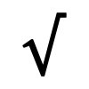
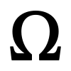
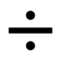
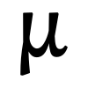
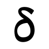
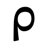
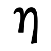

Paket 701
| I |  ∞ tak hingga |  √ akar |  Δ delta besar |  ∫ integral |  ± plus minus |
|---|---|---|---|---|---|
| II |  α alfa |  ∑ sigma jumlah |  → panah |  ∅ himpunan kosong |  ≠ tidak sama |
| III |  π pi |  ∂ parsial |  ∪ gabungan | ‰ permil |  ⇒ implikasi |
| IV |  Ω omega besar |  ∇ nabla |  ÷ bagi |  ∀ untuk semua |  ∠ sudut |
| V |  β beta |  ∮ integral tertutup |  ⊕ plus bulat | ≈ hampir sama |  ∃ ada |
| VI |  μ mu | ∏ produk |  ∴ jadi |  ⊥ tegak lurus |  ℃ derajat celsius |
| VII |  δ delta kecil |  ℏ h coret | ∩ irisan |  ⇌ setimbang |  ≡ identik |
| VIII |  Γ gamma besar | √ akar | ∈ elemen |  ⊗ kali bulat | ∞ tak hingga |
| IX |  ρ rho | ∑ sigma jumlah | ∥ sejajar |  Å angstrom | ∝ sebanding |
| X |  η eta | ∫ integral |  ⊂ subset |  ↔ panah dua arah |  ∵ karena |